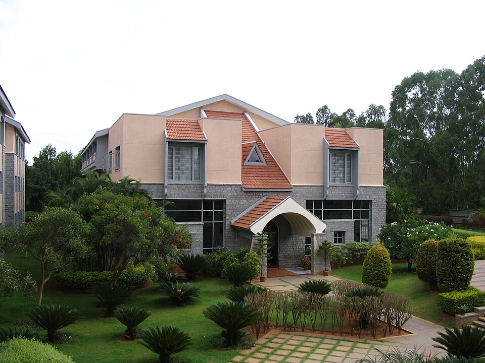

TISB 캠퍼스 안 건물(게스트하우스) · 사진: Kprateek88 / Wikimedia Commons, CC BY-SA 3.0
TISB 방갈로르(The International School Bangalore) — 인도에서 "인터내셔널"은 이름이고, 확인할 것은 보드입니다
⚠️ 약칭 주의 — 이 학교의 약칭 TISB는 글자 하나 차이로 ISB와 섞입니다. 저희 사이트에도 ISB 방콕(International School Bangkok)과 ISB 베이징(International School of Beijing)이 따로 있고, 셋은 아무 관계가 없는 서로 다른 학교입니다. 검색하실 때 Bangalore 또는 Bengaluru를 반드시 함께 넣으세요.
1. 어떤 학교인가 — 2000년에 문을 연 IGCSE·IB 학교
TISB(The International School Bangalore)는 2000년에 설립된 것으로 알려진 남녀공학 학교입니다. 교육자 K. P. 고팔크리슈나가 세운 것으로 전해지고, 벵갈루루의 내셔널 퍼블릭 스쿨 계열과 같은 재단(NAFL Trust) 아래에 있는 것으로 소개됩니다. 캠퍼스는 시내가 아니라 사르자푸라–바르투르 로드 쪽 외곽에 있습니다.
받는 연령은 만 3세 무렵부터 18세까지이고, 통학(day)과 기숙(residential)을 함께 운영하는 것으로 안내됩니다. 교육과정의 뼈대는 이렇습니다.
· 초등 — IB 초등 과정(PYP)으로 운영하는 것으로 소개됩니다
· G9~G10 — 케임브리지 IGCSE 2년 과정, 10학년 끝에 시험
· G11~G12 — IB 디플로마(DP) 2년 과정
※ 학생 수·학비·연도별 시험 결과나 순위처럼 해마다 달라지는 수치는 이 글에 적지 않았습니다. 학년별 과정 구성과 개설 과목은 해마다 바뀔 수 있으니 학교 요강을 직접 확인하세요.
2. 이 글의 핵심 — 인도에서는 이름이 아니라 "보드"를 봅니다
인도에서 학교를 알아보실 때 가장 먼저 부딪히는 것이 이겁니다. "OO International School"이라는 이름의 학교가 아주 많은데, 그중 상당수는 인도 국가 교육과정을 가르칩니다. 이름은 학교가 스스로 붙이는 것이고, 실제로 아이가 무엇을 배우고 졸업 때 무엇을 받는지는 어느 보드(board)의 인증을 받았는지가 정합니다.
| 보드 | 성격 | 주재원 가정이 생각할 점 |
|---|---|---|
| CBSE | 인도의 대표적인 국내 교육과정 | 인도 내 진학에 강점. 다른 나라로 옮길 때 과정이 이어지지 않습니다 |
| CISCE (ICSE·ISC) | 인도 국내 교육과정, 영어 비중이 높은 편 | 영어는 편해도 교과 체계는 인도식입니다 |
| 케임브리지 (IGCSE·A-Level) | 국제 과정 · 외부 시험 중심 | 다른 나라의 영국식 학교로 이어 붙이기가 수월합니다 |
| IB (PYP·MYP·DP) | 국제 과정 · 과제·내부 평가 비중이 큼 | 아시아 다른 도시의 IB 학교와 같은 잣대로 이어집니다 |
그래서 입학 문의 때 물으실 문장은 하나로 줄어듭니다. "우리 아이가 마지막 2년에 어떤 과정을 이수하고, 졸업할 때 어떤 증서를 받게 됩니까?" 학교 이름을 백 번 읽는 것보다 이 한 줄이 빠릅니다. TISB는 이 질문에 IGCSE(10학년) → IB 디플로마(12학년)로 답하는 학교입니다.
이것이 주재원 가정에 실제로 중요한 이유는 다음 발령 때문입니다. 인도 다음이 싱가포르나 상하이라면, 인도에서 IB나 케임브리지 과정을 밟아 온 아이는 싱가포르·상하이의 학교에 과정이 그대로 이어집니다. 반대로 인도 국내 보드로 3년을 보낸 아이는 같은 학년으로 옮겨도 배운 순서가 달라 한 번 더 흔들립니다.
3. 한국(주재원) 학생이 겪는 어려움 — 2년 + 2년이라는 구조
TISB의 고등 구간은 2년짜리 묶음이 연달아 두 번 옵니다. 이 구조를 모르고 들어가면 편입 시점에서 손해를 봅니다.
| 구간 | 공부·평가 방식 | 한국 학생이 막히는 곳 |
|---|---|---|
| 초등 (PYP) | 탐구 단원 중심, 과정을 보고 평가 | 진도가 눈에 안 보여 괜찮은 줄 알고 지나갑니다 |
| G9~G10 (IGCSE) | 2년이 한 코스 · 10학년 끝 외부 시험 | G10에 합류하면 1년을 건너뛴 채 시험을 봅니다 |
| G11~G12 (IB DP) | 2년이 한 코스 · 과제와 외부 시험 병행 | 중간 합류가 사실상 어렵고, 과목 조합을 되돌리기 힘듭니다 |
두 번째 줄이 가장 위험합니다. 한국의 중3~고1 무렵에 발령이 나는 가정이 많은데, 그 시기가 바로 IGCSE 2년 코스의 한가운데입니다. 아이는 1년 치 범위를 배우지 않은 상태로 외부 시험을 향해 가게 됩니다. 발령 시기가 그 구간에 걸린다면, 도착 전부터 학교에 "그 학년 중간 합류가 가능한지, 가능하다면 어느 과목이 부담이 큰지"를 먼저 물으셔야 합니다. 편입 전반은 편입·전학 총정리, 과목 고르는 구조는 과목 신청(Course Selection)에 정리해 두었습니다.
4. 통학과 기숙이 한 학교에 있다는 뜻
TISB는 통학생과 기숙생이 같은 학교를 다니는 구조로 안내됩니다. 인도에서는 드물지 않은 형태인데, 주재원 가정에는 생각보다 큰 의미가 있습니다.
| 상황 | 이 구조가 주는 선택지 |
|---|---|
| 발령지가 벵갈루루 안에서 바뀜 | 통학 거리가 멀어져도 학교를 바꾸지 않아도 됩니다 |
| 부모가 먼저 귀국해야 함 | 아이가 남은 과정을 마치는 길이 열립니다(자리·학년 조건 확인) |
| 아이가 IGCSE·DP 코스 중간 | 2년짜리 코스를 끊지 않고 끝낼 수 있습니다 |
| 출장이 잦은 가정 | 저녁 생활이 학교 일과 안에서 정리됩니다 |
다만 "같은 학교 안에 둘 다 있다"와 "원할 때 옮길 수 있다"는 다른 이야기입니다. 기숙 전환은 그해 자리와 받는 학년, 신청 시기에 걸립니다. 당장 쓰실 생각이 없더라도 입학 단계에서 전환 조건을 한 번 물어 두시는 편이 좋습니다. 기숙을 더 적극적으로 보고 계신다면, 인도의 산중 기숙학교를 다룬 코다이카날 인터내셔널 스쿨 글을 함께 보시기 바랍니다.
5. 그래서 이렇게 준비합니다 — 그리고 벵갈루루라는 조건
· ① 보드를 먼저 확인합니다. 후보 학교마다 "졸업 때 받는 자격" 한 줄을 적어 비교하세요(위 2번 표).
· ② 영어는 "쓰기"부터 손봅니다. IGCSE·IB 모두 근거를 들어 설명하는 글에서 점수가 갈립니다.
· ③ 수학은 용어와 서술을 함께 봅니다. 선행을 해 둔 아이도 영어 용어와 풀이 서술에서 깎입니다. → 입학 준비 총정리
· ④ G9 전에 방향을 한 번 정리합니다. IGCSE 과목 선택이 DP 과목을 좁힙니다. → IGCSE 과목 선택·IB 점수 구조
· ⑤ 통학 시간은 분으로 적습니다. 벵갈루루는 거리보다 교통 상황이 변수이고, 캠퍼스가 외곽이라 집 위치가 아이의 저녁을 통째로 바꿉니다. → 통학·스쿨버스
📌 인도는 한국과 시차가 3시간 30분입니다(인도 표준시). 한국 저녁 9시가 벵갈루루 오후 5시 30분이라, 아이가 하교한 직후 시간대에 화상 수업을 잡을 수 있습니다. 주재원 가정에 유리한 조건입니다. 다만 학사 일정은 한국과 어긋나므로, 과외 계획은 한국 학기가 아니라 현지 학사 일정에 맞춰 세우셔야 합니다. → 국제학교 학사 일정
관련 검색어: 방갈로르국제학교 · 벵갈루루국제학교 · 방갈로르국제학교수학과외 · 방갈로르국제학교영어과외 · 인도국제학교과외
정리
TISB는 2000년에 문을 연 것으로 알려진 벵갈루루의 국제 과정 학교이고, 10학년 끝 IGCSE → 11~12학년 IB 디플로마로 이어지는 구조에 통학과 기숙을 함께 운영합니다. 이 글에서 꼭 가져가실 것은 학교 하나의 정보가 아니라 인도에서 학교를 고르는 순서입니다. 이름에 International이 있는지가 아니라 어느 보드인지, 그리고 2년짜리 코스의 어디에 아이가 합류하는지를 먼저 보십시오. 지금 아이가 초등인지 G9 직전인지에 따라 할 일이 전혀 다르니, 30분 무료 수업으로 현재 위치부터 확인해 보시기 바랍니다. (학년 구성·과정 운영·기숙 조건은 바뀔 수 있으니 반드시 학교 요강을 직접 확인하세요.)